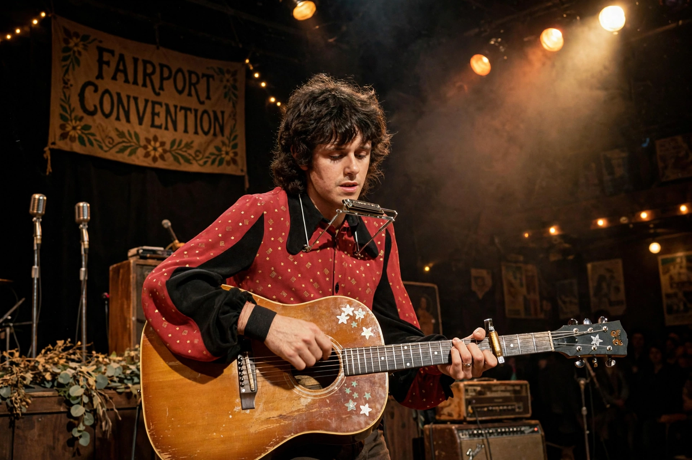

Richard John Thompson (born 3 April 1949) is a British singer, songwriter, and guitarist. He joined Fairport Convention as a teenager in 1967, helping pioneer British folk rock on albums such as Liege & Lief (1969), and left in 1971 for a solo career and a duo with his then-wife Linda Thompson.

With Linda Thompson he released acclaimed albums including I Want to See the Bright Lights Tonight (1974) and Shoot Out the Lights (1982). As a solo artist his records include Amnesia (1988), Rumor and Sigh (1991) — featuring "1952 Vincent Black Lightning", among his most celebrated songs — Mock Tudor (1999) and Still (2015), produced by Jeff Tweedy.
Thompson is renowned for a hybrid picking technique combining flatpick and fingers, and for songs blending folk traditions with dark wit. He received the Orville H. Gibson Award for lifetime achievement, an Ivor Novello Award for songwriting, and was appointed OBE in 2011. Rolling Stone ranked him among the greatest guitarists of all time. His memoir Beeswing appeared in 2021.